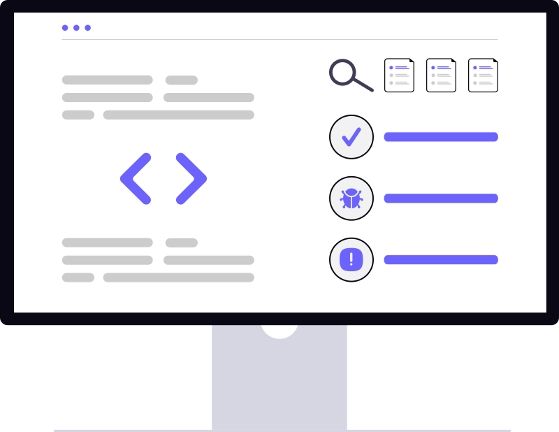

Hi, I'm
Boris Trajilovic
Senior Test Automation Engineer
I design, build, and scale automated testing solutions that help teams release faster and with confidence.

I design, build, and scale automated testing solutions that help teams release faster and with confidence.

I'm a Senior Test Automation Engineer with over 10 years of experience building and implementing scalable testing frameworks for web, API, and mobile applications. I help teams improve release speed and product quality through smart automation.
My approach combines solid architecture, continuous integration, and detailed reporting to make sure every build is tested efficiently and transparently. Whether it's Selenium, Playwright, or CI/CD pipelines, I focus on building systems that teams can trust and maintain long-term.
Delivered automation pipelines reducing regression time.
Architected modular Selenium and Playwright test frameworks with reporting and CI/CD integration.
Hands-on experience in Web, API, and Mobile testing with tools like Appium, and Postman.

Great automation isn't just about writing scripts - it's about building reliable systems that scale, help teams, and speed up delivery.
Every framework I build focuses on modular, data-driven design so teams can add or modify tests without friction.
Testing should never be an afterthought. I integrate automated suites directly into pipelines using Jenkins, GitHub Actions, and Docker.
I use Allure, Extent Reports, and custom dashboards to make results clear, actionable, and available to everyone in the team.
I work closely with developers, QA, and DevOps to align automation with real-world workflows and business goals.
I regularly improve frameworks with the latest best practices, from Playwright migration to test parallelization and containerization.
Here's a look at my journey from hands-on QA engineer to leading test automation strategy across teams and platforms.
In my current role as Software Quality Engineer I am responsible for automating tests across our entire environment.
That involves writing comprehensive tests from scratch in numerous languages, such as C# and Python.
To facilitate my daily work I use tools like SoapUI and Selenium.
To further my knowledge and understanding, I have also dabbled with Postman in my free time.
Considering our service is focused on large multinational clients, who need their software to work perfectly, my tests need to be complex with a plethora of specifics to consider.
To date, the most complex test framework I have written by myself includes 800+ test cases with 10k+ lines of code.
Exceeding my scope of work, I have further shown initiative by working across departments and writing software that ingests and processes data from SAP frameworks into Excel and vice versa automatically.
I am also providing developers with custom test plans for their code before it goes to production, as well as ample chance to discuss their code with me personally to further spread best practices of testing within the coding community.
In 2023 I also had the chance to grow into a leading role by overseeing and managing a group of five interns over a span of six weeks, instructing them as a group to develop a CIP (contiunal improvement process) in the microsoft office environment.
At the end of their internship they have successfully delivered a program we could have used in our daily work.
Naturally, I have completed the foundation level of the ISTQB certification in November 2023.
In my previous role as compliance engineer i was responsible for hardware stress tesing for different environments and legal requirements.
To also ensure customer satisfaction i held regular meetings with the external stakeholders to inform and plan the test scope for their needs.
As the main contact regarding the regulations i was also heavily involved in the development process with the project managers and developers
My main focus was the american market and the UL-Standards to which all hardware must comply in order to be used.
The daily business consisted of cunstructing and documenting the test setup, which will be put under extreme conditions in the climate chamber, ranging from -40°C to +80°C while also measuring the temperature and voltage of the components.
Furthermore, Overvoltage and Shortcircuit tests were performed and possible fire outbreak (tested with 30cm flame of a bunsen burner) to ensure human safety in case of failure.
Additionally IPXX-Tests for waterproof equipment and enclosure testing were performed
Due to regulations, a quarterly audit of the production line and the supply chain had to be done, which i lead and debriefed with the stakeholders.
To simplify the data aquisition for the audits from our databases, i also created automated scripts that can be used to fetch data/pdfs from SAP.
In my role as Software and Firmware Engineer I was responsible for programming microcontrollers and desktop applications for the automotive industry as well as the software necessary to run extensive climate chamber tests.
These are the core tools I use to build, run, and maintain automated testing systems across web, mobile, and API platforms.
Industry-standard framework for automating browsers with strong language support.
Modern, fast test automation tool supporting multiple browsers and parallel execution.
End-to-end testing framework focused on JavaScript apps and real-time debugging.
Powerful API testing and collaboration platform for manual and automated testing.

Java library for automating RESTful API testing with clean and fluent syntax.

Cross-platform automation tool for mobile applications on Android and iOS.
Continuous integration server that automates testing and deployment pipelines.
CI/CD automation within GitHub for running tests and workflows on every commit.
Containerization platform for consistent testing environments and CI pipelines.

Attractive and interactive test reporting framework for any automation stack.

Rich, customizable test reports with charts, categories, and screenshots.
Dynamic scripting language used for API, UI, and backend automation frameworks.
Enterprise-grade language for robust and scalable test automation frameworks.
Lightweight scripting language powering browser-based and UI automation.
I hold a recognized professional certification that validates my expertise in software testing.

ISTQB Certified Tester
You can reach me via email at [your-email@example.com] or connect on LinkedIn.